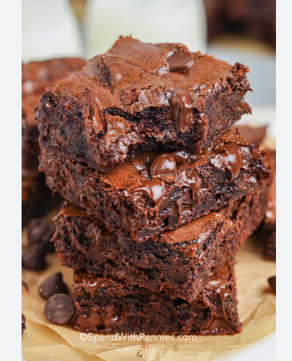

Homemade Brownies are really good and easy desserts to make at home with family and friends.

Ingredients
2 tablespoons water
2 large eggs
1 1/2 cups white sugar
2/3 cup cocoa powder,
3/4 cup flour
Vanilla Extract chocolate flavor 1/2 teaspoon
1/2 cup dark chocolate chips
1/2 cup canola oil
Method
First mix the dry and wet ingredients in 2 separate bowls,flour,
sugar, cocoa powder, chocolate chips, and salt in one bowl.in the other bowl there will be eggs,olive oil,and water
You will add the dry ingredients into the wet one and mix them untill it becomes a thick batter.
Poyr the batter into a baking pan lined with parchment paper and use a rubber spatula to spread it to all four sides of the pan and to smooth the top.
Bake them in the oven to a 325 degree and bake for 40-45 minutes untill the toothpick comes out clean.
Let them cool for 10 minutes and enjoy the richer chocolate flavor.